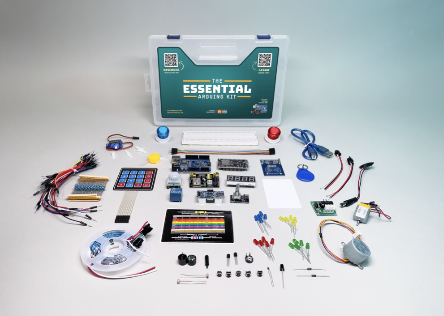
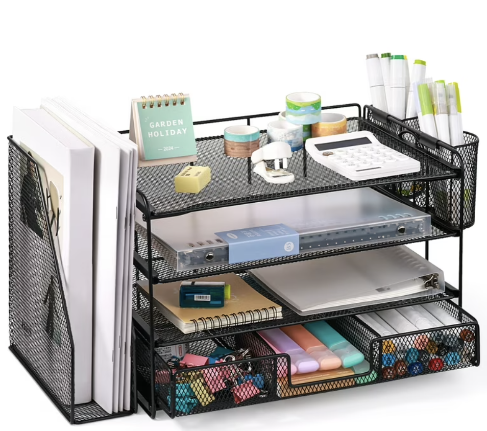
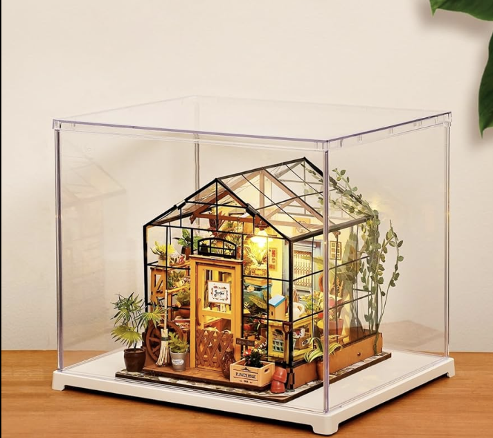
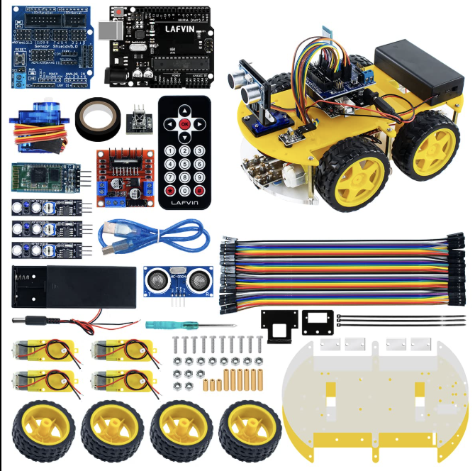

Project Kits & Materials
Kits
Discover DIY kits from inventive creators in our community. Try a project or get inspired to design your own!
-

Arduino Starter Kitby Tony the TigerEverything you need to start building electronics, from blinking LEDs to sensors and motors.
-

Desk Organizer Kitby Cheyenne the DudeAssemble your own wooden desk organizer—perfect for makers who love a tidy workspace.
-
Wearable LED Kitby Trisha PeytasMake a glowing accessory or badge using flexible LEDs and easy instructions.
-

Mini Greenhouse Kitby Sara SproutBuild a tabletop greenhouse for herbs or seedlings, great for windowsills.
-

Robot Car Kitby Leo ByteConstruct and program a small robot car—learn the basics of robotics and coding.
Materials & Toolboxes
Find the core tools and starter materials recommended by fellow builders.
-
Precision Screwdriver Set
curated by Cheyenne the DudeTackle tiny screws on electronics, toys, and gadgets with this essential set.
-
Breadboard & Jumper Wires
curated by Tony the TigerPrototype circuits and test ideas—no soldering required.
-
Mini Hot Glue Gun
curated by Trisha PeytasFor quick fixes, crafts, and creative assembly work.
-
Craft Knife
curated by Sara SproutPerfect for precision cutting in model making and paper crafts.
-
Alligator Clips
curated by Leo ByteGreat for making temporary connections and testing circuits.